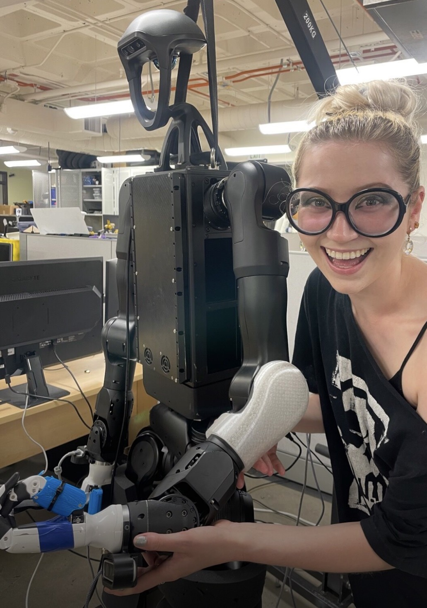
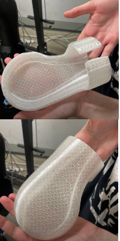

Robots & AI · 3D Printing
Robot Fashion
Collaboration with HIRO Group, CU Boulder


3D Printing Robot Fashion
Klara Nitsche, HIRO Lab at CU Boulder
Humanoid robots have heavy limbs. When they fail unexpectedly, these limbs may cause harm to surrounding humans, robots, or the humanoid’s own body. To amend this problem, I assisted the HIRO lab (Humans Interacting with Robots) with creating multi-material 3D-printed fashion accessories to cushion robot limbs and reduce damage during failure.
We used TPU (thermoplastic polyurethane) to create a soft, squishy covering. We designed the accessory in Blender, an open-source CAD software, using GenTact, an extension that allows users to import robot URDFs and design topical ‘skins’ over specified limbs. Trail and error was fraught in the 3D-printing process, but we fine-tuned the printer to reliably print a squishy, TPU arm cuff to protect an exposed elbow joint. I initially designed accessories inspired by victorian hoop skirts, where a conical structure would protect vulnerable joints at the wrist and elbow. However, due to fabrication constraints we went with a sleeker, more constricted design that acted as a shock absorber and pillow around the limb.
Before settling on TPU, I also experimented with PLA and Verashore (a soft foaming filament whose foam expansion properties are proportional to the heat at which it’s printed). I also experimented with a dual-layer skin using PLA and TPU to mimic how human skin changes color when pressed. Final skins used TPU and conductive PLA for embedded tactile sensing.